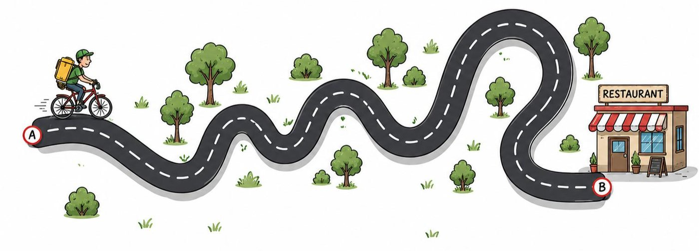

Situation: a delivery guy has to bring flowers to a restaurant at point B. A man is planning to propose and sends an urgent message:

The curvy road from A to B is 10 km long and takes about 30 minutes to cycle. The rider wishes he could take the shortest route directly to the restaurant. The delivery guy now has two options.
The rider decides to travel directly towards the restaurant.
The rider decides to stay on the road because it is safer and easier to follow.
Different roads, different distances — but the same displacement! Keep that in mind.
One more thing to know: if we have traveled without changing direction (one way), then displacement and distance will have the same number.
Distance and displacement are not the same thing. Distance is always positive and keeps growing as you move. Displacement is a number with a direction — it can shrink, be negative, or even be zero if you return to where you started.